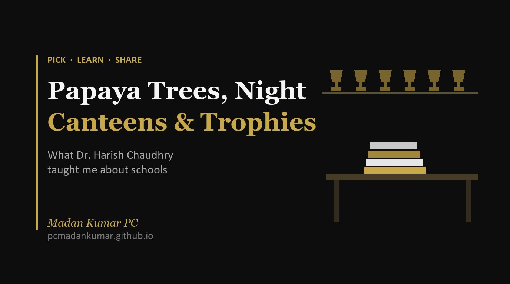

Papaya Trees, Night Canteens and Principals' Trophies: What Dr. Harish Chaudhry Taught Me About Schools

Notes from Dr. Harish Chaudhry in conversation with Ankur Bora on the Intersect podcast
This week I watched Dr. Harish Chaudhry, professor at IIT Delhi, in conversation with Ankur Bora on the Intersect podcast by Masters Union. I expected a talk on school leadership. What I got was a life story that explains why he cares so much about schools. [1]
A father who lived on papaya
Dr. Harish’s grandfather owned five acres of land in a village near Meerut. His father, the youngest of four brothers, walked out of home with one rupee and fifty paise to study law. He made one promise to himself: his children would get the best education in the country.
In 1969, two of his sons won full government scholarships to The Doon School. Even with the scholarship, the fees stretched a small town lawyer’s income. Years later, Dr. Harish learned that his parents did not buy vegetables or dal for one full year. Their rented house had six papaya trees. If the tree gave ripe fruit, they ate it as fruit. If the papaya fell early, it became the vegetable for the day.
I paused the video there. Every school I have worked in has parents making quiet sacrifices like this. We rarely hear about them, and we rarely ask.
Engineering by accident, teaching by choice
His real love was English literature. He had admissions to St. Stephen’s, BITS Pilani and IIT. He told his father he wanted to study literature. His father, a lawyer who had seen enough of small town courts, gently steered him away. So he went to IIT Kanpur for chemical engineering.
From there the path looks like a corporate success story: Dunlop in Kolkata, an MBA at IIM Bangalore, then a young company called NIIT. But his reading had stopped. Every day was sales, targets and travel. In 1987, he joined IIT Delhi as a lecturer at about half his salary, planning to stay five years. When a well paying offer came from Colgate, his old teacher, then the director, asked one question: “Toothpaste? Do you not like IIT Delhi?” He stayed, and he has been there ever since.
This part hit close to home for me. I also spent my early years in IT consulting before moving into education. People still ask me why I left. Dr. Harish’s answer is better than mine: academics gave him time to think, to reflect, and to follow what he actually wanted to do.
Learning happens outside the classroom
The stories he tells about his own teachers are the heart of this conversation.
At Doon, there was a teacher the boys called “Bond” because he seemed to have an eye at the back of his head. Thirty years later, at an alumni dinner, this teacher greeted Dr. Harish by name, recalled his school number and house, and asked about two of his classmates by name too. Dr. Harish had never been in his class. They had only met on the football field, the hockey field and in the hostel. “That is a teacher,” he says.
At IIT Kanpur, a professor walked into a statistical thermodynamics class and admitted he had found two books in a library abroad and had not read them himself. Each student would present a chapter. Two days later, at 8:30 at night, the professor came to the hostel looking for Harish, sat with him for three hours and corrected every slide. He did the same for every student.
The teachers who changed his life were the ones who sat with students at night, in the canteen, on the field. For him, learning happened between 9 pm and 2 am in the hostel.
He also says something every teacher trainer should hear: a good teacher need not be brilliant. Good teachers learn alongside their students. What they need is passion, love for the child, and a real understanding of how learning happens. Most training modules, he argues, focus on content and miss exactly this.
The brassware showroom
Over the years, Dr. Harish has visited 93 private school principals’ offices. Only six had any books in them. Most had trophies, shields and cups. At one school in Kuwait, a colleague looked around the principal’s room and said, “Ma’am, this looks like a brassware showroom.”
He laughs about it, but the point is serious. An excellent teacher with 25 years in the classroom suddenly becomes a principal, with no training in management in between. Many struggle quietly.
A senior UK school leader once told him something he still repeats: there is no problem in school education that has not been found somewhere and solved somewhere. The real gap is communication and relationships between schools. That idea now shapes his work. He takes groups of Indian principals to schools in Finland, the UK and elsewhere, and invites those schools back to India, because he believes they have much to learn from us too.
He is also blunt about respect. His wife, a school teacher for 30 years, works three times harder than him and earns a quarter of his salary. In Finland, a heart surgeon earns three to four times what a new teacher does. In India, the gap is enormous, and so is the gap in respect.
Why schools are the root
The turning point came in 2004, when he took leave from IIT to run a management institute in Dehradun. He calls it a complete failure. The students had no habit or interest in learning, and he could not fix that at college level. He looked back and saw where the problem started. Higher education cannot perform unless school education performs.
So in 2009 he organised his first school education conference at IIT Delhi. He expected 50 people; 900 turned up from 15 countries, and the logistics fell apart. He took the microphone, apologised, and said something brave: if these talks did not help you, it shows how far research in this field still has to go. The conference has run every year since.
His heart is with the mid tier private schools, where students are hungry and have something to prove. He notes, with some regret, that India built the IITs hoping they would lift schools from the top. They became islands of excellence instead.
What I am taking away
Three things will stay with me.
First, every child in our classrooms has a family story we do not see. Second, the best learning happens in the time and spaces outside the timetable, and teachers who show up there are the ones students remember. Third, school leaders need books on their desks and training in their hands, not just trophies on their shelves.
As someone who trains teachers and guides students, I found this conversation both humbling and energising. If you work in schools, please watch the full episode. Then ask yourself one question: what is on your desk right now, and what does it say about what you value?
Reference
- Intersect by Masters Union. Dr. Harish Chaudhry in conversation with Ankur Bora [Podcast episode]. YouTube. https://www.youtube.com/watch?v=FYoPU-kk0NQ